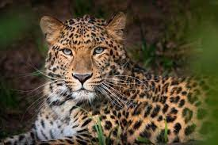

Zone géographique : de l'Afrique à l'Asie
lieu de vie : savane jusqu'aux forêts primaires, en passant par la montagne, les zones désertiques et les
marécages
alimentation: Carnivore
Longévité : 12 – 17 ans
Famille: Félins
Taille : 90 – 160 cm
mode de vie : nocturne
comportement : Comme la majorité des félins, le léopard est un animal solitaire, qui ne côtoie ses semblables
que pour la reproduction. La chasse est menée à la vue et à l'ouïe. Le léopard est un prédateur furtif qui
s'approche au plus près de sa proie en rampant à couvert avant de lui sauter dessus et de la tuer d'une morsure
à la nuque ou par strangulation.